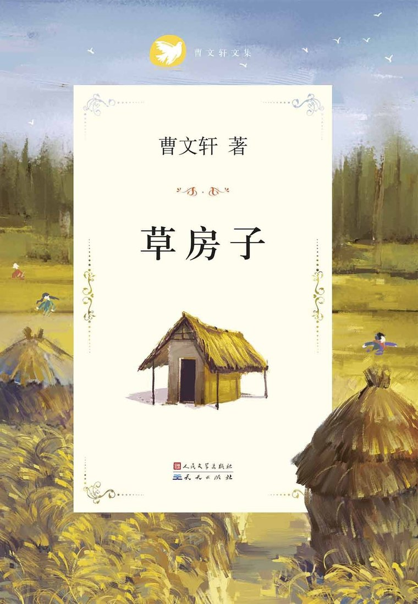

草房子
曹文轩 · 纯美少年小说
男孩桑桑在苏北水乡油麻地小学度过的六年，是一首清澈又带着淡淡忧伤的成长歌谣——苦难与温情交织，纯美与人性辉光并存。
儿童文学童年成长
水乡纯美

《草房子》讲述男孩桑桑在油麻地小学刻骨铭心、终身难忘的六年校园生活。六年里，他亲眼目睹或直接参与了一连串看似寻常却又催人泪下、撼动人心的故事。
这里有同龄人之间纯洁无瑕的情意，有不幸少年与厄运相拼时的悲怆与优雅，有身体有缺陷的男孩用行动捍卫尊严，有垂暮老人在人生最后瞬间闪耀出崇高的人格光彩，也有大人们之间扑朔迷离又充满诗情画意的情感纠葛。
作品格调高雅，叙述浅易而又深刻、谐趣而又庄重，自始至终洋溢着一种淳朴的美感，荡漾着一种悲悯的情怀。
曹文轩 1954 年生于江苏盐城的水乡，童年与青少年都在那里度过。二十岁离开故乡，却始终保持着对那片水土的浓厚情感。《草房子》的世界，正源自他童年真实生活过的世界——水网密布的苏北农村，枫树下鳞次栉比的金色草房子。
1995 年自东京大学回国后，应江苏少儿社之邀动笔；"草房子"的意象在他心里已等待多年。从萌生到最后问世，前后约七八年。
| 章节 | 人物 / 名句 |
|---|---|
| 第一章 秃鹤 | 陆鹤因天生秃顶被唤作"秃鹤"，以倔强守护尊严。 |
| 第二章 纸月 | 自幼丧母、比同龄人更成熟的女孩，安静而坚韧。 |
| 第五章·八章 红门 | 杜小康家道中落，从优越跌落，于放鸭中学会担当。 |
| 第六章 细马 | 离开家乡、与养母相依的男孩，在磨砺中成长。 |
| 第九章 药寮 | 桑桑重病死里逃生，完成属于自己的成长礼。 |
| 代跋《追随永恒》 | "追随永恒"——对纯真岁月的凝望与不舍。 |
| 年份 | 出版社 | ISBN |
|---|---|---|
| 1997.12 | 江苏少年儿童出版社（初版） | 7-5346-1872-X |
| 2005.4 | 江苏少年儿童出版社（第 2 版） | — |
| 2011 | 人民文学出版社《曹文轩文集》 | 978-7-5016-0509-5 |
| 2020 | 天天出版社 | 978-7-5016-1228-4 |
《草房子》被誉为"纯美"儿童文学的范本，以诗化的语言、忧郁的情调、唯美的品格，"实现了回归古典美与追求永恒两个目标的统一"。它奠定了曹文轩在中国儿童文学中的标杆地位，并借 2016 年国际安徒生奖将中国少年成长书写推向世界。
想读完整作品？可在微信读书在线阅读《草房子》全文：
📖 微信读书 · 阅读《草房子》